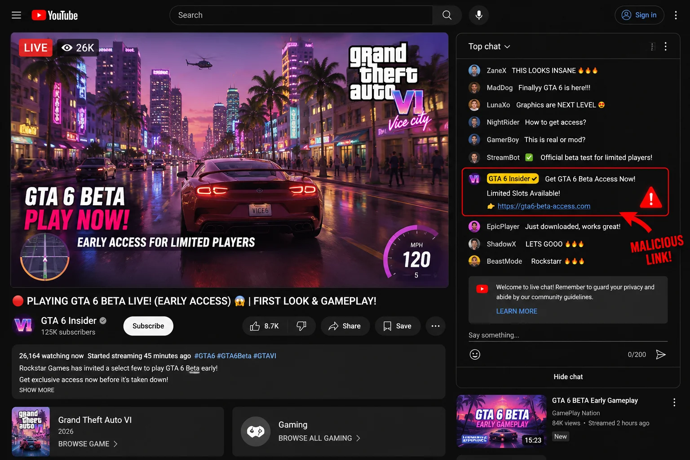
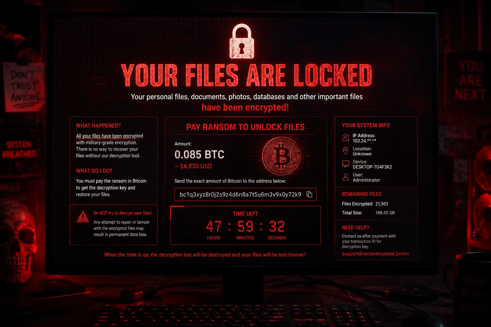

Imagine checking your email and seeing a highly anticipated message directly from Rockstar Games. The subject line reads "Exclusive Invitation: Grand Theft Auto 6 Closed Beta Testing." Your heart starts racing. You open the email, and it looks flawless. It features the official logo, perfect formatting, and a personalized greeting addressing you by your gaming handle. It even includes a brief voice memo from a lead developer welcoming you to the program.
You excitedly click the link, download the game client, and double click the installer. In that exact moment, you have not gained access to the game of the decade. Instead, you have just handed over every password, every banking detail, and complete control of your computer to an international cybercrime syndicate.
This is not a hypothetical scenario. This is happening right now in 2026.
The hype surrounding the release of Grand Theft Auto 6 is entirely unprecedented in the history of entertainment media. Millions of gamers worldwide are desperately searching daily for any fragment of news, leaked gameplay, or early access opportunities. Cybercriminals are completely aware of this desperation. However, unlike the simple and obvious phishing scams of the past decade, today's hackers are leveraging highly advanced artificial intelligence to craft traps that are virtually indistinguishable from reality. They are executing what cybersecurity experts are calling the most sophisticated, large scale gaming fraud operation ever witnessed.
"The intersection of unprecedented cultural hype and the sudden accessibility of generative artificial intelligence has created a perfect storm for cyber fraud. Gamers are walking blindly into digital bear traps that look identical to official game studios."
If you or anyone you know is eagerly awaiting the next installment of this massive franchise, you must understand exactly how these modern scams operate. Let us break down the specific ways hackers are using deepfakes, AI voice cloning, and advanced social engineering to steal your hard earned money and sensitive digital identity.
1. The YouTube Live Stream Illusion
One of the most widespread and effective methods currently being deployed involves fake live streams on massive platforms like YouTube and Twitch. Hackers will typically hijack an existing, verified channel that already has hundreds of thousands of subscribers. They completely rebrand the channel to look like an official Rockstar Games broadcast network, complete with verified checkmarks and professional banner art.
They then launch a "Live Stream" that appears to show brand new, never before seen gameplay footage of Grand Theft Auto 6. This footage is often generated using advanced AI video models trained on the official trailers and past game assets, creating highly convincing, dynamic scenes that easily fool eager fans.

However, the visual element is only half of the deception. To truly sell the illusion, the hackers utilize sophisticated AI voice cloning technology. They feed hours of publicly available interviews featuring actual company executives into a voice cloning engine. The resulting audio track plays over the live stream, sounding exactly like the real developers narrating the gameplay and announcing a "surprise open beta access period" for the viewers watching the stream.
The cloned voice will urgently direct viewers to click a link pinned in the live chat or the video description. Because the viewers hear the voice of an authority figure they recognize and trust, their critical thinking is bypassed entirely. They click the link, desperate to secure their spot before the hypothetical beta fills up, walking straight into the trap.
How to Verify Official Information
Never trust a live stream simply because the channel has a large subscriber count or a verified badge. Hackers frequently purchase or steal compromised accounts specifically for these operations. You should only trust announcements that are simultaneously published on the official company website and their verified social media accounts. If a massive beta test was genuinely happening, every major gaming news outlet would be reporting on it simultaneously.
2. Hyper-Personalized "Exclusive Access" Phishing
While the live stream scams cast a wide net to catch as many victims as possible, another faction of hackers is utilizing a much more targeted approach. We previously covered the rise of highly sophisticated email fraud in our article discussing the most dangerous AI scams of the year. The GTA 6 beta scam takes this methodology to a new extreme.
Cybercriminals are deploying large language models to scrape data from popular gaming forums, subreddit communities, and social media platforms. They identify users who are actively discussing the game and demonstrating high levels of anticipation. The AI then automatically drafts highly personalized emails tailored to each specific user. For example, if you frequently post on a specific gaming forum, the email might reference your username and claim you were selected for the beta based on your long standing community engagement.
These emails are entirely devoid of the typical red flags associated with older phishing attempts. There are no spelling errors, no awkward phrasing, and no suspicious sender domains that are immediately obvious. The AI generates clean, corporate level copy that perfectly mimics the tone and formatting of official communications. The emails will contain a button prompting the user to "Claim Your Beta Key" or "Download the Secure Game Client." Clicking this button redirects the user to a flawlessly cloned replica of the official website, designed to harvest login credentials and personal information.
The Zero Trust Approach
When dealing with unprompted emails offering exclusive access to anything, you must adopt a zero trust policy. You should immediately implement the following checks:
- Inspect the raw email headers. Do not simply look at the display name. Expand the sender details to ensure the underlying email address precisely matches the official corporate domain.
- Manually type the URL. Never click the embedded button or link. Open a completely new browser tab and manually type the known, official web address to check for any beta announcements.
- Check community forums. If a targeted beta wave is actually occurring, you will immediately see hundreds of legitimate users discussing it on platforms like Reddit. If there is absolute silence, the email is a targeted scam.
3. The Malicious "Leaked Beta Client" Ransomware Trap
The final and perhaps most destructive variation of this scam targets users who actively seek out leaked software. Many gamers understand that they will not receive official beta invitations, so they turn to alternative sources like torrent websites, Discord servers, and underground forums searching for a "leaked" version of the game client.
Hackers pre-empt this behavior by flooding these channels with thousands of seemingly legitimate files named "GTA6_Beta_Leak_Install.exe" or similar variations. To increase credibility, they will use AI generated comments from fake user accounts claiming that the download works perfectly and providing fabricated instructions on how to bypass the non-existent server authentication.

When a victim downloads and executes this file, they do not install a game. Instead, they silently install advanced ransomware. The malicious software rapidly encrypts every single personal document, photograph, and save file on their entire hard drive. It then displays a lock screen demanding a massive payment in untraceable cryptocurrency, threatening to permanently delete the decryption key if the ransom is not paid within a strict time limit. Furthermore, modern variants of this malware often include secondary payloads that quietly exfiltrate saved passwords from the web browser, compromising the victim's email accounts, banking portals, and digital identity.
Essential Data Protection Strategies
If you are exploring the internet for unverified files, you are operating in highly dangerous territory. You must establish a robust backup protocol. Ensure that you maintain completely disconnected, offline backups of your critical data on an external hard drive. Additionally, utilize a reliable, paid antivirus solution that features real-time heuristic analysis capable of detecting and blocking zero-day ransomware execution before the encryption process begins.
The Bottom Line: Do Not Let Hype Override Logic
The developers behind Grand Theft Auto 6 have made their stance abundantly clear through their official communications channels. They are not conducting any public beta testing phases. There are no secret access keys being distributed via random emails. There are no leaked gameplay clients floating around on Discord servers. Anything claiming otherwise is an absolute falsehood designed explicitly to exploit your excitement.
As artificial intelligence continues to evolve at a blistering pace, the tools available to cybercriminals will only become more refined and deceptive. You can no longer rely on spotting simple typos or strange robotic voices to identify fraud. You must cultivate a mindset of healthy skepticism. Protect your digital footprint, secure your sensitive accounts with multi-factor authentication, and remember the golden rule of the internet: if an offer appears significantly too good to be true, it is undoubtedly a scam engineered to take advantage of you. Stay vigilant, stay informed, and do not let your anticipation for a video game cost you your financial security.
Frequently Asked Questions About the GTA 6 Scam
Is there a real GTA 6 beta test available to the public?
No. Rockstar Games has explicitly stated that they are not conducting any public beta testing for Grand Theft Auto 6. Any website, video, or email claiming to offer beta access is completely fake and likely malicious. You should ignore any communication suggesting otherwise.
How are scammers using AI to trick people into downloading the fake beta?
Scammers are using artificial intelligence to clone the voices of real developers and executives. They use these cloned voices to narrate fake gameplay videos on YouTube, making it sound like an official announcement. They also use AI to generate highly convincing phishing emails that look identical to official communications, tailored specifically to target enthusiastic gamers.
What happens if I download the fake GTA 6 beta client?
If you download the fake beta client, you will infect your computer with severe malware. This usually includes ransomware that locks all your personal files until you pay a fee in cryptocurrency, or keyloggers that silently steal your banking passwords and gaming account credentials. It is a highly destructive process that can result in total data loss.
How can I verify if an email from Rockstar Games is genuine?
Always check the sender email address carefully. A real email will come from a verified rockstargames.com domain. Furthermore, you should never click on links inside unexpected emails. Instead, manually type the official website address into your browser to check for any announcements directly from the source.